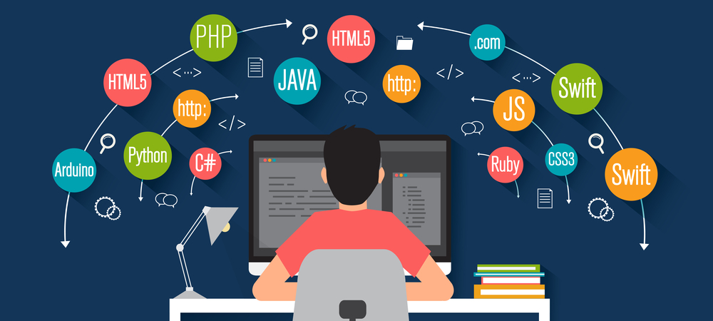

What Is Coding?
You might be reading this article from a computer, a phone, or another device. This is possible because somebody wrote code to program your device, allowing it to display this article’s content for you. If you hear this and you wonder, hmmm, what is coding? Well, you’re in the right place, as this article will answer that very question. So read on as we cover various topics, including what is computer coding, what it is used for, and why it is important.
So, what does coding mean, and what does coding do? Let’s start with a coding definition in simple terms. Coding in computers is the process of writing instructions for computers that we call code. Through coding, humans can create instructions that computers can understand and execute. Coding in computers is done using coding languages composed of symbols, words, and syntax rules. When programmers write code using a code language, special software called compilers, and assemblers convert it into machine language (more on that later), allowing the computer to read and execute their code. This process allows computers to perform tasks like data processing, automating repetitive tasks, creating websites and applications, and much more.
Coding vs Programming: What’s the Difference?
You’ll often hear the terms coding and programming being used interchangeably, but it’s important to note that they are not the same thing. Coding is the exercise of writing code, and it requires a proper understanding of the syntax of a coding language. You can then use that understanding to compose the code that forms your program. On the other hand, programming refers to all the processes involved in creating programs (or software). This includes clearly defining the problem to be solved, identifying solutions, determining trade-offs, selecting an efficient solution, coding, testing, and debugging. The analogy of writing a novel is a good way to visualize this difference. Coding is like the writing process as it involves choosing the words and following grammar rules. Programming is an analog for the entire process, including defining the plot, character development, etc. Hopefully, this helps to clear that up!
The Importance of Computers in Coding
Computers are vital for coding because they are the agents of execution. The idea of coding in computers is to create instructions for computers to perform, as they possess the processing power, storage, and user interface we need to perform the coding process. Computers also have the ability to process large amounts of data quickly and correctly. They can also perform repetitive tasks consistently without getting bored or tired. These attributes make them ideal for handling automation and solving complex problems.
What Is a Coding Language?
A coding language is very similar to a human spoken language, as it’s simply a set of symbols and words. When combined with composition rules (syntax), it allows us to create code that computers can execute. Put simply, coding languages are what programmers use to write programs that instruct computers to do stuff. There are many higher-level coding languages, and each has its own syntax and area where it’s most suitable. Common language examples include JavaScript, Python, Java, Ruby, C++, C#, Swift, and many more. Each coding language has pros and cons, so choosing the right language usually depends on your project requirements. For example, some languages like JavaScript are better for web development, while others are great with complex data analysis or scientific computing, like Python.
What Is Coding Used For?
What can coding be used for? That’s a good question. Well, technology has become part of almost every area of human endeavor you can think of. And so has coding. Coding has been used to power many of the technologies that make our lives convenient, from communication, transportation, and entertainment, to healthcare, agriculture, finance, and more. Still, what is coding used for? Let’s look at some common examples: Software Development: Developing computer software such as desktop applications, mobile apps, games, etc. Web Development: Creating websites and web applications, including front-end (client side) and back-end (server-side) development. Database Management: Interacting with databases, such as creating, reading, updating, and deleting data from a database. Automation: Creating scripts to automate repetitive tasks, such as data processing, backups, and file management. Data Analysis: Processing and analyzing large data sets with languages like Python and R. Artificial Intelligence (AI) & Machine Learning (ML): Developing algorithms and models that allow computers to learn from data, make predictions, and automate decision-making. Cybersecurity: Writing code to protect computer systems and networks from malicious threats and attacks. Robotics: Programming and controlling robots, drones, and other physical devices using code. Scientific Research: Using code to model and simulate complex systems and processes in fields like physics, biology, finance, and more.
THE SOURCE